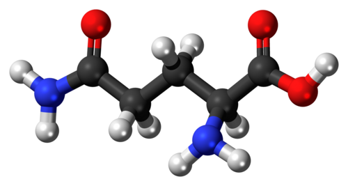

Glutagut
For intestinal barrier function
BarrierBalanceWellbeing
GLUTAGUT is a food supplement based on L-glutamine, an amino acid naturally present in the body and a key component of tissues with high cell turnover. The gut is central to the body's overall balance: with its L-glutamine-only formulation, GLUTAGUT offers targeted support for maintaining the integrity of the intestinal barrier and the physiological function of the mucosa. An essential formula providing a key nutrient on which to build daily balance and wellbeing.
What it supports
- Supports the maintenance of intestinal barrier integrity
- Supports the physiological function of the intestinal mucosa
- Provides a preferred energy source for intestinal cells
- Supports the physiological cell renewal of the mucosa
- Supports muscle recovery processes after physical activity
- Helps cover the increased requirement during periods of intense physical effort
Gut wellbeing is closely tied to the body's overall balance: supporting the intestinal barrier means giving a solid foundation to the natural processes of maintenance and recovery.
Key ingredients
L-glutamine
The most abundant amino acid in the body and the preferred energy source for the cells of the intestinal lining. It plays an important role in maintaining the integrity of the intestinal barrier, supporting physiological cell renewal and contributing to the proper balance of gut function.

L-glutamine and muscle recovery
An amino acid involved in the body's metabolic processes, also used in sports nutrition to support muscle recovery after physical activity. It can be a useful support during periods of greater physical effort, when the need for nutrients involved in recovery increases.
Typical content
| Component | Amount |
|---|---|
| L-glutamine | 5000 mg |
Typical content per daily dose (1 sachet).
How to use
One sachet a day, dissolved in a glass of water, preferably away from meals.
Label information ingredients · warnings · storage
Ingredients
L-glutamine. Gluten free · Lactose free · Suitable for vegetarians and vegans.
Warnings
Do not exceed the recommended daily dose. Keep out of reach of children under 3 years of age. Food supplements are not intended as a substitute for a varied, balanced diet and a healthy lifestyle. Do not give to children under three years of age. During pregnancy and breastfeeding, seek the advice of your pharmacist or doctor.
Storage
Store tightly closed in a cool, dry place, away from direct sunlight and heat sources. The expiry date refers to the product correctly stored in an intact pack.
The other Stilo Lab formulas


33 g